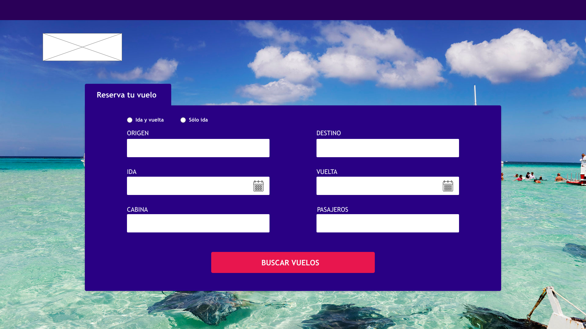
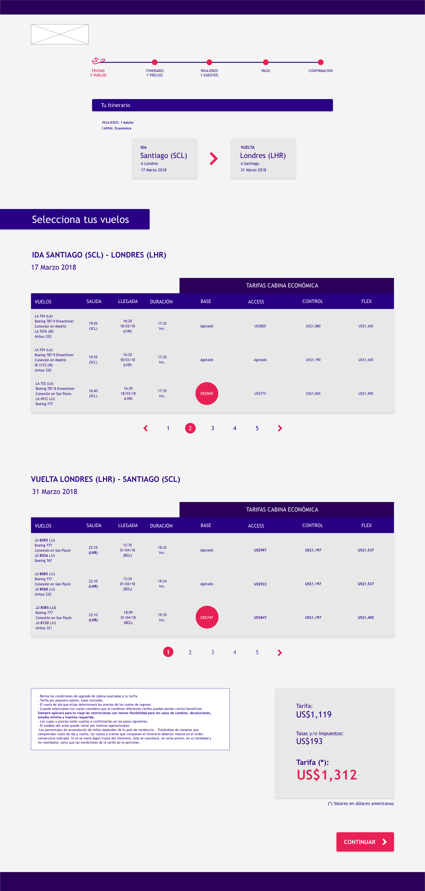
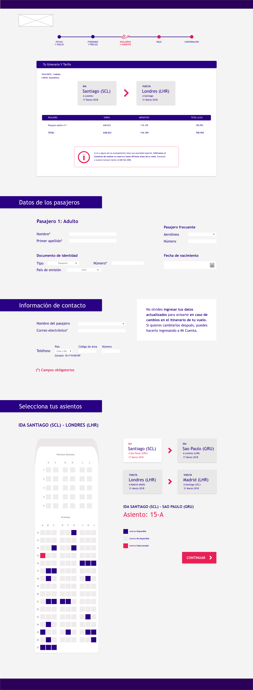
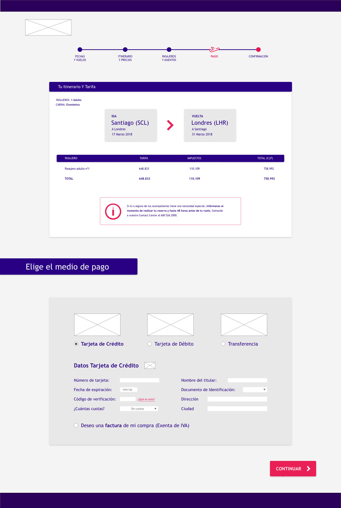
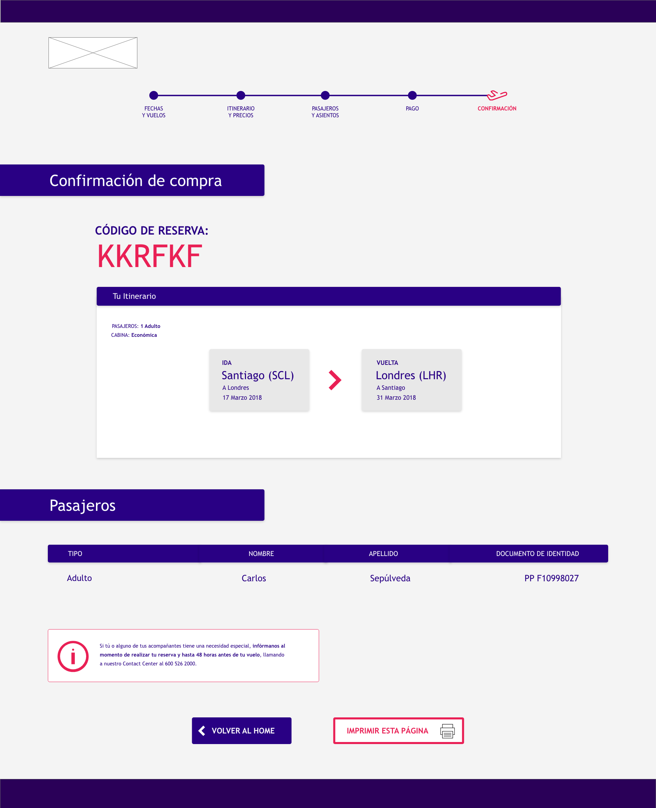

Visual Design
Wireframing - Visual Design






This proposal is inspired by the LATAM's visual identity and booking flow. I researched how is the booking flow now (for national and international flights) on the LATAM's website. Then I analyzed the flow and I made hypotheses about pain-points in the experience.
To validate these hypotheses I decided to make some changes in particular elements and to join some features to improve the user experience. This includes to decrease the number of air flights than the user can choose in the second step, to change the way to show the steps and itinerary and several other visual changes.
Usability Testing and A/B Testing should be the next steps to validate this proposal.